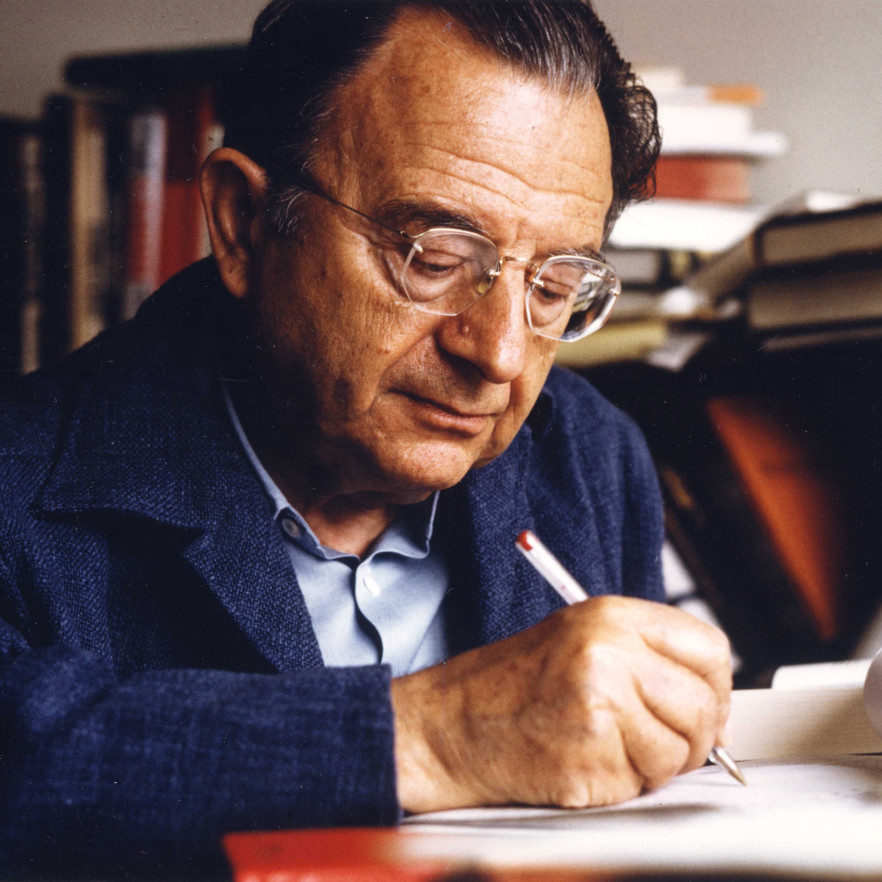

Röviden
Erich Fromm egy német-amerikai (Frankfurt am Main, Németország, 1900. március 23. – Muralto, Ticino kanton, Svájc, 1980. március 18.) filozófus, szociálpszichológus.
A 20. század jelentős humanistája, író, valamint gyakorló pszichoanalitikus, aki bírálta Sigmund Freud-ot.

Miről ismert?
"Birtokolni vagy létezni"
Karakterorientáció
Biztonság vs. szabadság